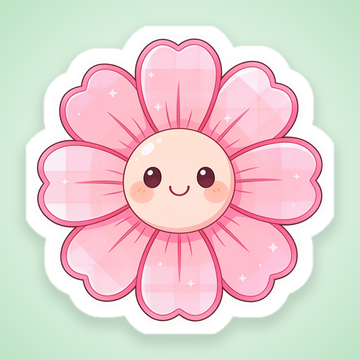
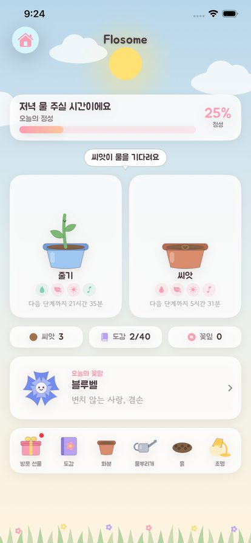
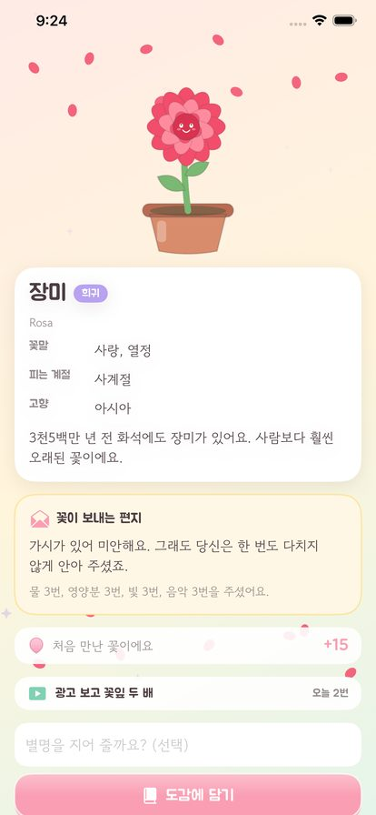
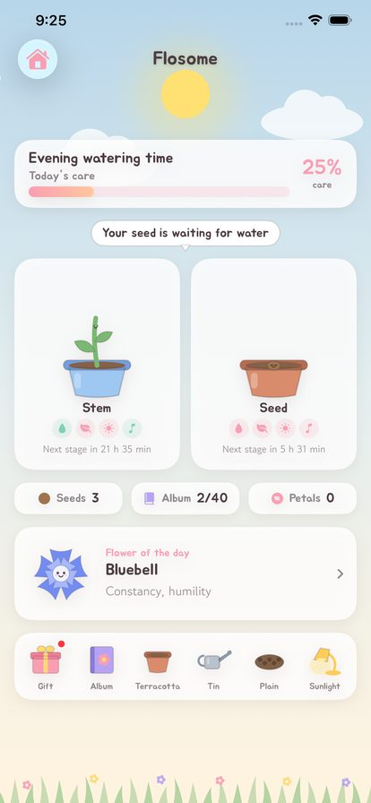
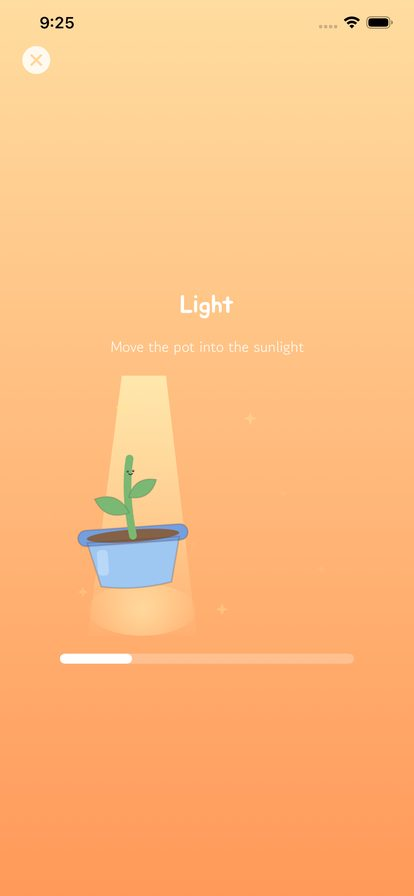
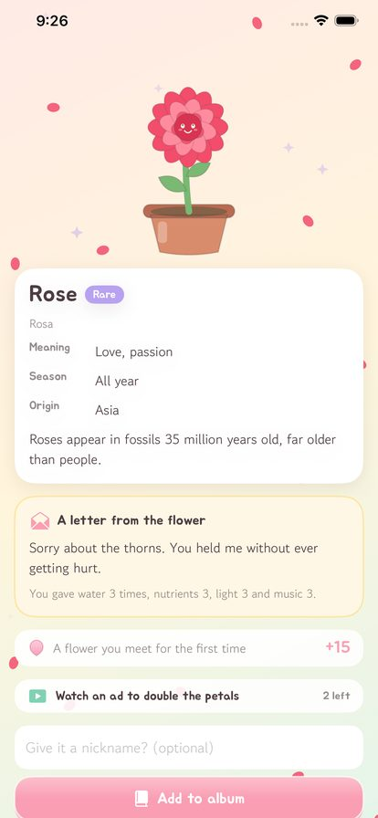

씨앗 하나로 시작하는 꽃 정원. 무슨 꽃이 필지는 봉오리가 맺힐 때까지 아무도 모릅니다.
Grow a seed, meet a flower. Nobody knows which flower is coming until the bud forms.





씨앗을 심어도 어떤 꽃이 될지는 봉오리가 맺힐 때까지 알 수 없어요. 마흔 가지 꽃이 기다립니다.
물을 주고, 영양분을 넣고, 창가의 햇빛으로 화분을 옮기고, 음악을 들려주세요.
씨앗에서 새싹, 줄기, 봉오리, 그리고 꽃으로. 매일 잠깐 들여다보는 시간이 전부예요.
꽃이 피면 이름과 꽃말, 계절과 이야기를 알려드려요. 나라마다 전해지는 꽃말로 담았습니다.
매일 들어오면 화분, 물뿌리개, 흙, 조명을 받아 나만의 정원을 꾸밀 수 있어요.
배너와 전면 광고가 없어요. 원할 때만 보는 보상형 광고뿐이고, 보지 않아도 모든 꽃을 모을 수 있어요.
Even after you plant a seed, its identity stays hidden until the bud forms. Forty flowers are waiting.
Water it, feed it, carry the pot into the window light, and play it some music.
Seed, sprout, stem, bud, and then the bloom. Looking in for a moment each day is all it asks.
Learn each flower's name, meaning, season and story, told the way each language tells it.
Visit each day for pots, watering cans, soils and lamps to arrange your own garden.
No banners, no interstitials. Only rewarded ads you choose, and every flower can be collected without them.